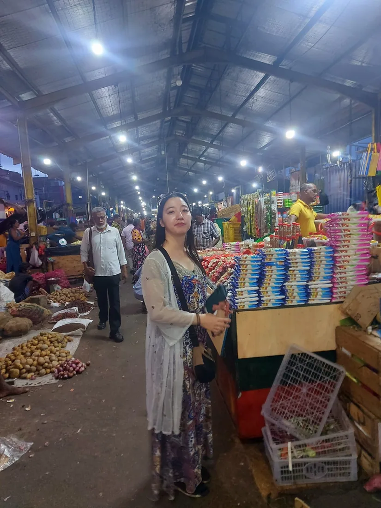
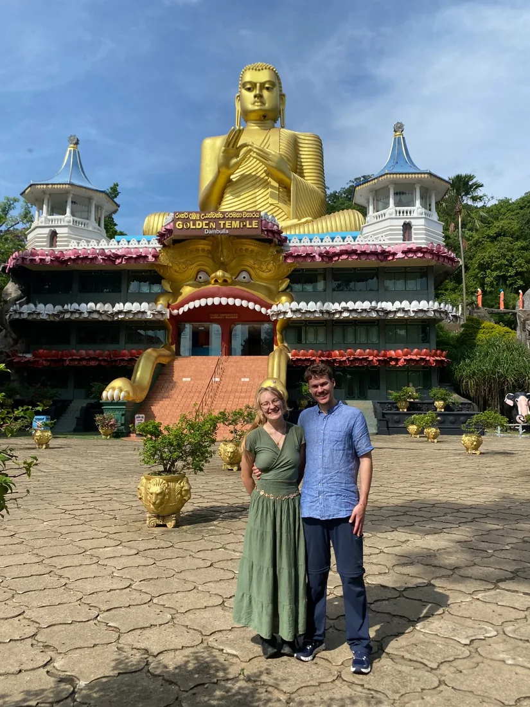
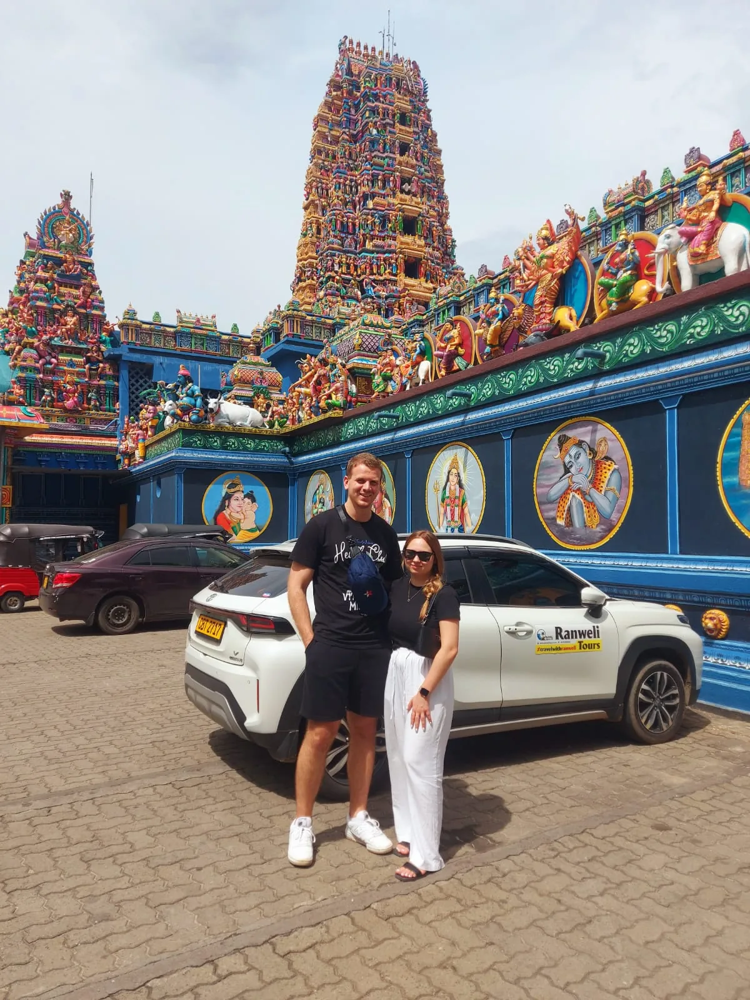

Notes from Sri Lanka
Plan your Sri Lanka journey with destination guides from Ranweli Tours.
Ideas for your journey
Places to visit on the East Coast
Explore ideas for temple visits, lagoons and coastal towns.
Read the guideWhy visit the East Coast?
Get a feel for the region’s coastline, marine activities and culture.
Read the guide
Sri Lanka’s waterfalls
Look for waterfall stops to add to your route through the hills.
Read the guide



What is the Ramayana?
Read an introduction to the epic and its place in the pilgrimage tradition.
Read the guide